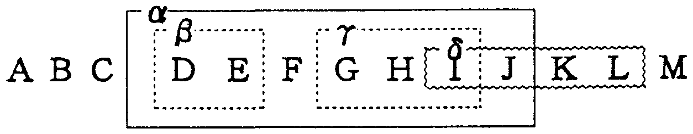
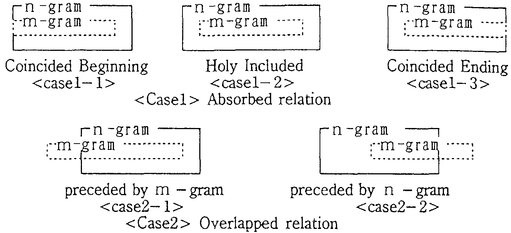
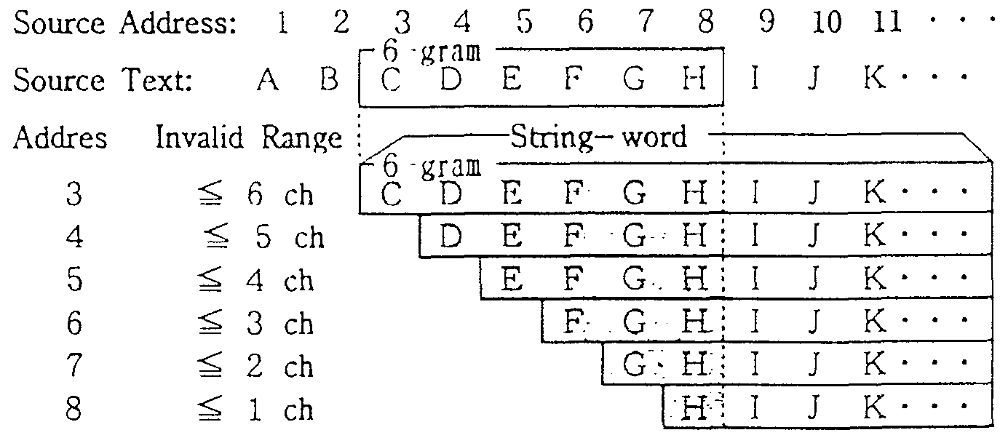
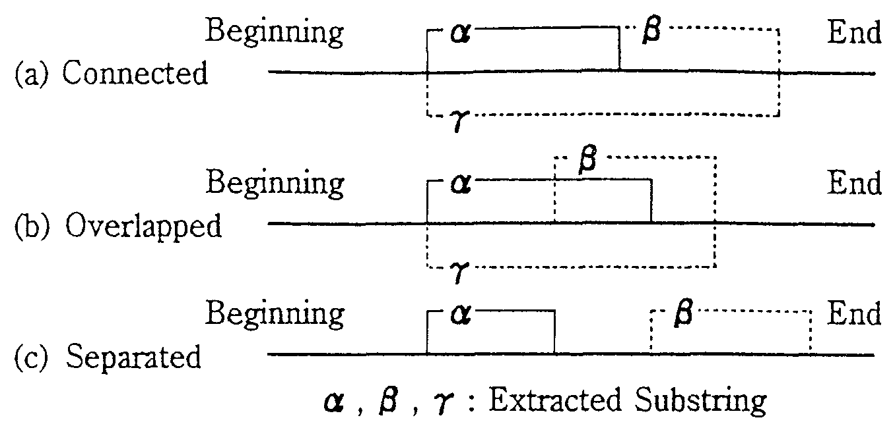

| |||||||||||||||||||||||||||||||||||||||||||||||||||||||||||||||||||||||||||||||||||||||||||||||||||||||||||||||||||||||||||||||||||||||||||||||||||||||||||||||||||||||||||||||||||||||||||||||||||||||||||||||||||||||||||||||||||||||||||||||||||||||||||||||||||||||||||||||||||||||||||||||||||||||||||||||||||||||||||||||||||||||||||||||||||||||||||||||||||||||||||||||||||||||||||||||||||||||||||||||||||||||||||||||||||||||||||||||||||
| |||||||||||||||||||||||||||||||||||||||||||||||||||||||||||||||||||||||||||||||||||||||||||||||||||||||||||||||||||||||||||||||||||||||||||||||||||||||||||||||||||||||||||||||||||||||||||||||||||||||||||||||||||||||||||||||||||||||||||||||||||||||||||||||||||||||||||||||||||||||||||||||||||||||||||||||||||||||||||||||||||||||||||||||||||||||||||||||||||||||||||||||||||||||||||||||||||||||||||||||||||||||||||||||||||||||||||||||||||
| |||||||||||||||||||||||||||||||||||||||||||||||||||||||||||||||||||||||||||||||||||||||||||||||||||||||||||||||||||||||||||||||||||||||||||||||||||||||||||||||||||||||||||||||||||||||||||||||||||||||||||||||||||||||||||||||||||||||||||||||||||||||||||||||||||||||||||||||||||||||||||||||||||||||||||||||||||||||||||||||||||||||||||||||||||||||||||||||||||||||||||||||||||||||||||||||||||||||||||||||||||||||||||||||||||||||||||||||||||
| |||||||||||||||||||||||||||||||||||||||||||||||||||||||||||||||||||||||||||||||||||||||||||||||||||||||||||||||||||||||||||||||||||||||||||||||||||||||||||||||||||||||||||||||||||||||||||||||||||||||||||||||||||||||||||||||||||||||||||||||||||||||||||||||||||||||||||||||||||||||||||||||||||||||||||||||||||||||||||||||||||||||||||||||||||||||||||||||||||||||||||||||||||||||||||||||||||||||||||||||||||||||||||||||||||||||||||||||||||
| |||||||||||||||||||||||||||||||||||||||||||||||||||||||||||||||||||||||||||||||||||||||||||||||||||||||||||||||||||||||||||||||||||||||||||||||||||||||||||||||||||||||||||||||||||||||||||||||||||||||||||||||||||||||||||||||||||||||||||||||||||||||||||||||||||||||||||||||||||||||||||||||||||||||||||||||||||||||||||||||||||||||||||||||||||||||||||||||||||||||||||||||||||||||||||||||||||||||||||||||||||||||||||||||||||||||||||||||||||
In order to extract rigid expressions with a high frequency of use, new algorithm that can efficiently extract both uninterrupted and interrupted collocations from very large corpora has been proposed.
The statistical method recently proposed for calculating N-gram of arbitrary N can be applied to the extraction of uninterrupted collocations. But this method posed problems that so large volumes of fractional and unnecessary expressions are extracted that it was imppossible to extract interrupted collocations combining the results. To solve this problem, this paper proposed a new algorithm that restrains extraction of unnecessary substrings. This is followed by the proposal of a method that enable to extract interrupted collocations.
The new methods are applied to Japanese newspaper articles involving 8.92 million characters. In the case of uninterrupted collocadons with string length of 2 or mere characters and frequency of appearance 2 or more times, there were 4.4 millions types of expressions (total frequency of 31.2 millions times) extracted by the N-gram method. In contrast, the new method has reduced this to 0.97 million types (total frequency of 2.6 million times) revealing a substantial reduction in fractional and unnecessary expressions. In the case of interrupted collocational substring extraction, combining the substring with frequency of 10 times or more extracted by the first method, 6.5 thousand types of pairs of substrings with the total frequency of 21.8 thousands were extracted.
In natural language processing, the importance of large volume corpus has been pointed out together with the need for technology of analyzing these linguistic data. For example, in machine translation, there are many expressions that are difficult to be translated literally. Phrase translations or pattern translations based on phrase or pattern dictionaries are considered very useful for the translations of these expressions.
In order to realize these translation, it is required to identify phrases of nigh frequency and patterns of expressions from the corpora, There are many method proposed to extract rigid expressions from corpora such as a method of focusing on the binding strength of two words (Church and Hanks 1990); the distance between words (Smadja and Makeown 1990); and the number of combined words and frequency of appearance (Kita 1993, 1994). But it was not easy to identify and extract expressions of arbitrary lengths and high frequency of appearance from very large corpora. Thus, conventional methods had to introduce some kinds of restrictions such as the limitation of the kind of chains or the length of chains to be extracted (Smadja 1993, Shinnou and Isahara 1995).
Recently, a new method which can calculate arbitrary number of n-gram statistics for very large corpora has been proposed (Nagao and Mori 1994). This method has made it possible to automatically and quickly extract and tabulate substrings of any length used in source texts. Unfortunately, in this method, so many fractionnl substrings that were grammatically and semantically inconsistent were being extracted that it was difficult to extract combi nations of expressions collocated at separate locations (i.e, interrupted collocation) which requires a search of the source text by combining the strings thus extracted, Thus, the analyses had to be limited into small texts (Colier 1994).
To overcome this problems, this paper first, proposes a method that can automatically extract and tabulate uninterrupted collocationnl substrings and without omission from the corpora in the order of substring length and frequency under the condition that fractional substrings are excluded. Second, using the results of the first method, it also proposes a method that can automatically extract and tabulate internIpted collocational substrings.
(1) Conditions for Collocational Substring extraction
In order to extract uninterrupted collocation without omission and to minimize extraction of fractional substrings, we will introduce the following three conditions.
1st Condition: Substrings can be extracted in the order of the number of matching character (string length).
2nd Condition: Substrings can be extracted in the order of frequency of use.
3rd Condition: Substrings should be extracted according to the principle of the longest match.
|
 |
Here, 3rd condition means that when a string (for instance in Fig.1) is extracted from a certain location within the source text, any substring ( , ) that is included within the string ( ) is not subject to extraction. But should such substring ( ) be located in a separate or overlap position, it is to be extracted.
(2) Conventional Algorithm for N-gram Statistics
Before discussing the algorithm which satisfies the previous conditions for uninterrupted collocational substring, let's consider the Nagao and Mori's algorithm propose for N-gram statistics.
[Statistica1 Method for N-gram]
Assume that the total number of characters in a source text (corpus) is N.
Procedure 1: Preparation of Pointer Table
Prepare PT-0 (Pointer Table-0) of N records of SP (Source Pointer) , with the values of 0, 1, 2, , i, ,N-1. Here, the value i represents the String-word i which is the substring from position i to the last character (N-1 address) in the source text.
Procedure 2: Pointer Table Sorting
The records of PT-0 are sorted in the order of corresponding String-words to obtain SPT-0 (Sorted Pointer Table-0).
Procedure 3: Counting of Matching Characters
The characters of String-word i is compared with that of the next String-word i+1 from the beginning. The number of matched characters are registered in the field of a NMC (Number of Matching Character) in the record i.
Procedure E: Extraction of Substrings
Comparing the values of NMCs of record i and that of the record i+1 of the SPT from i=1 to i=N-1, substrings are extracted and their frequency are determined*1.
(3) Problems of N-gram Statistic:s
Nagao and Mori's method obviously fulfills requirements of Conditions 1 and 2, but not Condition 3. It is expected that the accurate frequency of any substring is obtained subtracting the frequency by the frequency of the other subsuing which is included in substring *2. Unfortunately, this does not satisfy Condition 3. At the time when extracted substring list has been compiled, information regaming mutual inter-relationship between the extracted substrings within the original text has been lost rendering calculations impossible.
(1) Co-relations between Extracted Substrings
In order to satisfy the requirement of Condition 3, consider the extraction of n-gram substring after extracting m -gram substring. The problem arises when there is a certain overlap between them as shown in Fig.1.
The Case of Absorbed Relation (Case 1) can be classified into three sub-cases as shown, but regardless of which situation, the m-gram substring is absorbed in the substring of n-gram and therefore there is no need to extract such a m-grarn substring. Thus, when extracting n-gram strings, there is a need to invalidate the related record of the SPT so that m-gram strings do not become involved in processes to follow.
|
 |
The Case of Partially Joint Relation (Case 2) can be further classified into two sub-cases. But in either situation, the m-gram string and n-gram string merely overlapped and therefore they are need to be extracted separately.
(2) Necessity of Validity Check for String-words
When one substring is extracted, in order not to extract the absorbed string from the same part of source text where the substring was already extracted (Case 1), related records of SPT need to be checked if the record is valid or not before extracting the next substring.
For example, the substring of 6 characters in the String-word 3 shown in Fig. 3 was extracted, the substring of String-words 3,4,5,,8 need to be set as invalid for the length equal or less than 6,5,4,,1 characters from the beginning.
|
 |
Here, we propose an algorithm which satisfy Condition 3 as well as Conditions 1 and 2.
<Preparation>
Fields of NSC (Number of Significant Characters) and RN (Record Number) are added to SPT-0 (Sorted Pointer Table) used for N-gram statistics.
<Algorithm (See Fig.4)>
Procedure 1 through 3: Same as the N-gram statistics.
Procedure 4: Significant Character Determination
The length of substrings to be extracted are decided from NMC and written in the NSC field of SPT- 0 .
Procedure 5: Preparation of Augmented PT
After sorting the SPT-0 in the original order, add a VP (Validity Flag) field to obtain an PT-1.
Procedre 6: Validity Determination
According to the method shown in 3.1(2), check the validity of the substring pointed by the records of the PT-1 in the order of the record number and write the results in the VF field.
Proceedure 7: Resorting of PT-1
Re-sort the PT-1 in the order of the values of SP fields to obtain a SPT-1.
Procedure 8: Extraction and Tabulation
By referring to the SPT-1 , the strings to be extracted are determined and their frequencies are calculated.
An example of the algorithm is shown in Fig.4. In this example, the types of substrings extracted by the conventional algorithm amounted to 24 with the total frequency of 72. In contrast, in the method proposed in this paper, these numbers have reduced to 5 and 10 respectively.
| |||||||||||||||||||||||||||||||||||||||||||||||||||||||||||||||||||||||||||||||||||||||||||||||||||||||||||||||||||||||||||||||||||||||||||||||||||||||||||||||||||||||||||||||||||||||||||||||||||||||||||||||||||||||||||||||||||||||||||||||||||||||||||||||||||||||||||||||||||||||||||||||||||||||||||||||||||||||||||||||||||||||||||||||||||||||||||||||||||||||||||||||||||||||||||||||||||||||||||||||||||||||||||||||||||||||||||||||||||||||||||||||||||||||||||||||||||||||||||||||||||||||||||||||||||||||||||||||||||||||||||||||||||||||||||||||||||||||||||||||||||||||||||||||||||||||||||||||||||||||||||||||||||||||||||||||||||||||||||||||||||||||||||||||||||||||||||||||||||||||||||||||||||||||||||||||||||||||||||||||||||||||||||||||||||||||||||||||||||||||||||||||||||||||||||||||||||||||||||||||||||||||||||||||||||||||||||||||||||||||||||||||||||||||||||||||||||||||||||||||||||||||||||||||||||||||||||||||||||||||||||||||||||||||||||||||||||||||||||||||||||||||||||||||||||||||||||||||||||||||
Here, let's consider combinations of 2 or more uninterrupted collocational substrings in different locations within a single sentence together with a method of determining the frequency of them. In this case, boundary conditions of sentences and mutual relationship between the extracted substrings need to be considered.
(1) Boundary Conditions of Sentences
When considering the collocation of substrings within a sentence, combinations of expressions spread over borders of sentences need to be excluded. But when a single sentence includes other sentences, the extraction of the combinations in units of sentences poses complications,
To simplify matters, we first assume that the substrings which have any kinds of punctuation mark as a part of them are not extracted in the procedure of uninterrupted collocation extraction. This can be easily performed by restraining the comparison procedure after finding a punctuation mark in Procedure 3. Second, we assume that when a left quote character is found within a sentence, all characters are ignored until the right quote character forming a pair with the former character.
(2) Relationships between Extracted Substrings
In extraction of interrupted collocations, substrings that are linked to or partially overlap one another are excluded from the scope of extraction. Let's consider substrings and which have been extracted from the same sentence. The positioning would be one of the three cases shown in Fig.3. Case (c) in which substring and are separate from one another is a case of extracting interrupted collocations, and Cases (a) and (b) are not*3.
(3) Order of Substring Appearance
In the case of extracting interrupted collocations, the order of appearance of substrings should be considered. Hence, collocational substrings are extracted and counted taking notice of the order of the appearance of each substring.
|
 |
[Preparation]
Sequential number is given to all of the substrings extracted in Chapter 3 in the order of extractions. These Number are registered in the NES (Number of Extracted Substrings) field of the respective record in SPT- 1.
Procedure 9: Re-sorting the SPT-1
The SPT-1 is sorted in the original order of the values of SP fields.
Procedure 10: Numbering of the sentences
SN(Sentence Number) field is added for entering the sentence number of original sentence to which one's record belongs.
Procedure 11: Table condensation
The table obtained is condensed by procedures shown in the following to obtain a SPT-2*.
(1) All fields other than the four, Sentence Numbers, ESN, NSC and RN are deleted.
(2) All records with no values in the NES field are deleted.
Procedure 12: Extraction of Interrupted Collocation
Here, k is the number of substrings which compose interrupted colocational expressions. Then, all of the combinations of k NESs for every sentence are written down into a file and sorted. And the number of the same combination of NES are counted.
Thus, the substring list of interrupted collocations can be obtained. If the sentence number is given to every combination list of NES, the sentences corresponding to the extracted interrupted collocation call easily be identified.
The lower part of Fig.4 shows the application of this method for k=2. In this case, there are possibility of 25 combinations for 5 types of uninterrupted collocational substrings obtained by chapter 3. Out of these combinations, 7 combinations were extracted as the combinations which collocate twice or more within the same sentence. And the total frequency of these amount to 14 times.
Applying the proposed method to the newspaper articles of Nikkei Industrial News for three months (8.92 million characters), uninterrupted and interrupted collocational substrings were extracted. in this experiments, XEROX ARGOSS 5270 (OS4.1.3) was used. The memory capacity were 48 MB.
(1) Characteristics of Extracted Substring
From the view point of the length and frequency, the number of extracted substrings are compared with those of the N-gram method and summarized in Table 1 and Table 2. Some examples of extracted substrings are shown in Table 3. And the examples of substrings with high frequency are also shown in Table 4.
| Comp | Proposed Methfod | N-gram Statistics | Ratio | |||
| Gram | a: Extract Substring | b: Total Frequency | c:Extract Substring | d: Total Frequency | a/c | b/d |
2 |
970,203 | 2,613,704 | 4,374,141 | 31,178,897 | 22.2% | 8.38% |
| 5 |
591,901 | 1,476,922 | 2,960,487 | 10,808,458 | 20.0% | 13.7% |
| 10 |
52,214 | 114,270 | 673,601 | 1,550,817 | 7.75% | 7.37% |
| 20 |
1,792 | 3,692 | 177,298 | 359,810 | 1.01% | 1.03% |
| Comp. | Proposed Method | N-gram Statistics | Ratio | |||
| Freq. | a:Extract Substring | b: Total Frequency | c:Extract Substring | d: Total Frequency | a/c | b/d |
| 2 |
970,203 | 2,613,704 | 4,377,087 | 39,588,291 | 22.2% | 6.60% |
| 5 |
67,321 | 551,441 | 882,217 | 31,288,701 | 7.63% | 1.76% |
| l0 |
12,351 | 217,934 | 372,291 | 28,050,199 | 3.32% | 0.78% |
| 20 |
2,288 | 92,804 | 169,375 | 25,871,964 | 1.35% | 0.36% |
| 50 |
285 | 37,850 | 62,991 | 22,209,375 | 0.45% | 0.17% |
| l00 |
76 | 24,167 | 30,316 | 19,961,961 | 0.25% | 0.12% |
| 200 |
20 | 16,771 | 14,363 | 17,759,432 | 0.14% | 0.07% |
| gram | Proposed Method | N-gram Statistics | ||||||||||||||||||||||||||||||||||||
| 5 gram |
[ 190,925 types Total 499,653 times ]
|
[ 748,172 types Total3,793,077 times ]
| ||||||||||||||||||||||||||||||||||||
| 10 gram |
[ 21,155 types Total 47,336 times ]
|
[ 132,865 types Total 345,232 times ]
|
| Examples of Substrings (frequency  200) 200) |
|
From these results, the following observations can be obtained.
 Compared with the N-gram method, most of fractional
subsuing has been deleted, and the types and the
number of the extracted substrings have highly reduced.
Compared with the N-gram method, most of fractional
subsuing has been deleted, and the types and the
number of the extracted substrings have highly reduced.
For example, in the extraction of substrings with the length of 2 or more and the frequency of 2 times or more, the substring type reduced to 22.2 % and total frequency of them reduced to 8.38 %. This effect increases as the increase of substring length. In the case of substrings of 20 or more characters, these number reduced to 1 %.
Most of substrings extracted by the proposed method forms expressions as syntactic or semantic units and there are few fractional substrings.
(2) Processing Time
It took about 40 hours to make SPT-0*4. But successive processes were performed very quickly (within one hour).
(1) Characteristics of Extracted Substrings
Interrupted conocational substrings were extracted for every two substrings which had appeared 10 or more times in the source text*5. The results are shown in Table 5. And, examples of substrings with nigh frequency and with much characters in total are shown in Table 6.
| FrequencyResults | No. of Pair of Substrings | Total Frequency of Pairs |
| 2 or more times | 6,544 | 21,829 |
| 5 or more times | 941 | 9,057 |
| 10 or more times | 237 | 4,556 |
| 20 or more times | 61 | 2,291 |
| Collocations of Compound Nouns |
| ||||||||||||||||||||||||
| Collocations of Sentence Patterns |
|
From these results, it can also be seen that expressions typical to newspapers have been extracted. Thus, using the output results, we can easily obtain interrupted collocational expressions as well as uninterrupted ones.
(2) Processing Time
In the case of interrupted collocational substring extraction, processing time depend highly on the number of components of substrings. In this experiment, the turnaround time was 1 or 2 hours where components of collocations to be extracted was limited to the substrings with the frequency of 10 or more times.
The methods of automatically identifying and extracting uninterrupted and interrupted collocations fcom very large corpora has been proposed.
First, from the view point of collocational expression extraction, the problems of Nagao and Mori's algorithm for calculating arbitrary length of N-gram has been pointed out. And, under the condition that fractional substrings are restrained to be extract, a new method of automatically extracting and tabulating all of the uninterrupted collocational substrings has been proposed. Next, using these results, a method for automatically extracting interrupted collocational substrings has been proposed. In this method, combinations of uninterrupted collocational substrings which collocate at different positions within a sentence are extracted and counted.
The method was applied to newspaper articles involving some 8.92 million characters. The results for uninterrupted collocations were compared with that of N-gram statistics. In the case of substring extraction with 2 or more characters, conventional method yielded substring of 4.4 millions types and the total frequency of them amount to 31.2 millions. In contrast, the method proposed in this paper extracted 0.97 millions types of substrings and a total frequency of them has reduced to 2.6 millions. In the case of interrupted collocational subsuing extraction, combining the substring with frequency of 10 times or more extracted by the first method, 6.5 thousand types of pairs of substrings with the total frequency of 21.8 thousands were extracted.
From these results, it can be said that , viewed from the point of extraction of collocational expressions (as units of syntactic and semantic expressions), substrings obtained by conventional methods include a voluminous amount of fractional substrings. In contrast, the method proposed in this paper reduces many of such fractional substrings and condensed into a group of substrings that can be regarded as units of expression. As a result, it has been made possible to easily calculate interrupted collocations and together with phrase templates and other basic data regarding sentence structure.
This paper used Japanese character chains to examine the algorithm. Yet this algorithm can be applied to arbitrary symbol chains. Various types of applications are possible, such as word chains, syntactic element chains obtained from results of morphological analysis or semantic attribute chains which consist of each word being converted to semantic attributes. As shown in this paper, applications for Japanese character chains still involve output of some amount of fractional stings. But when applications to word chains or syntactic element strings are concerned, further restriction of unnecessary elements are anticipated.


 (158),
(158),
 (2827),
(2827),